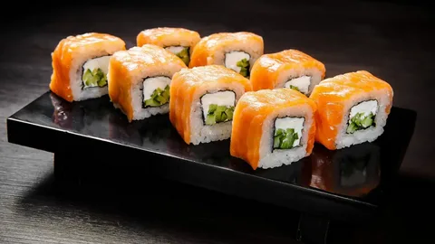

Классика среди суши. Нежнейший сливочный сыр Филадельфия в сочетании с лососем и авокадо делает этот ролл
мягким и насыщенным. Отличный выбор для ценителей традиционных вкусов.
Ингредиенты:
- Лосось
- сыр Филадельфия
- авокадо
- огурец
- рис
- нори
Цена: 550₽